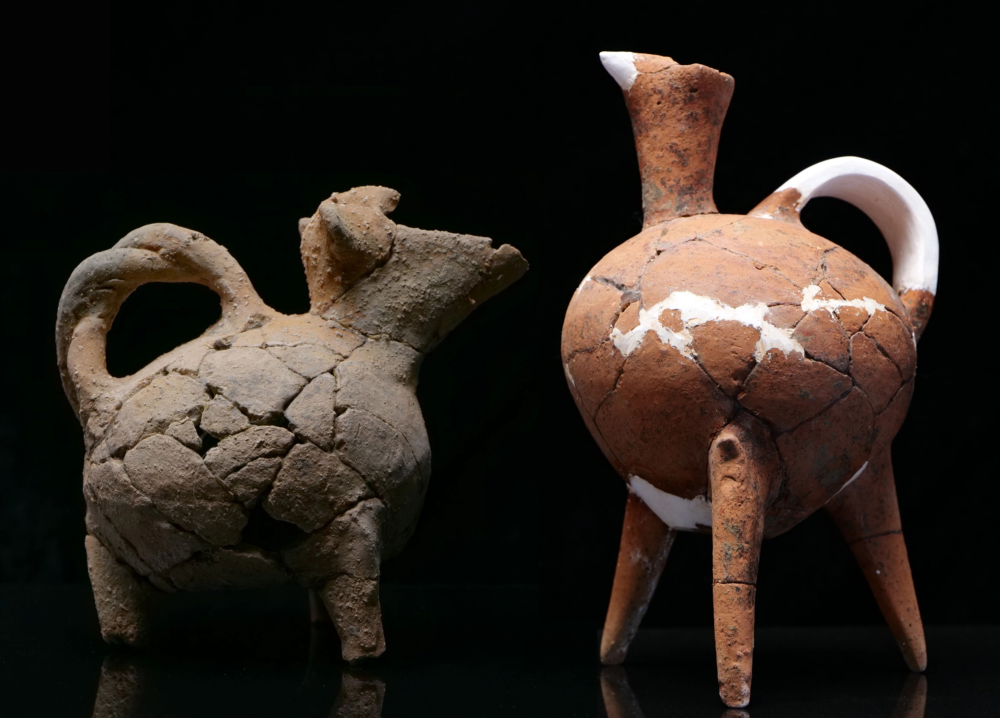
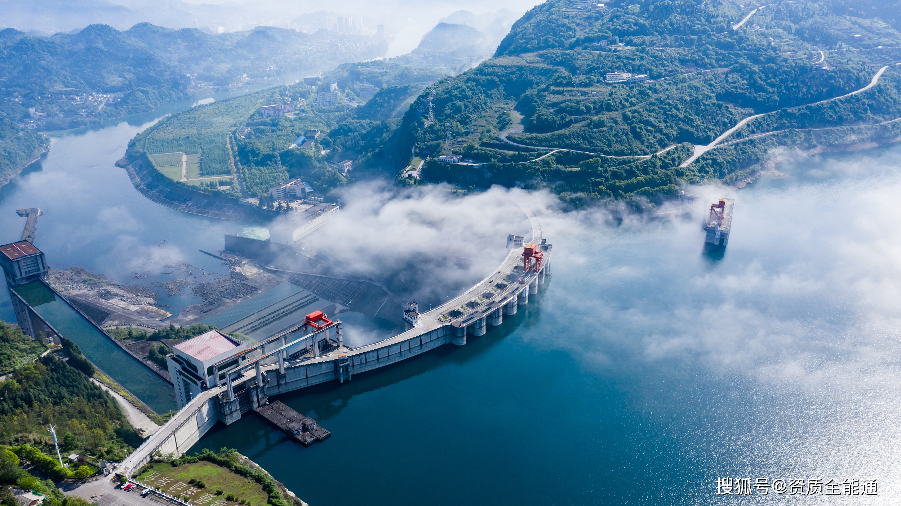
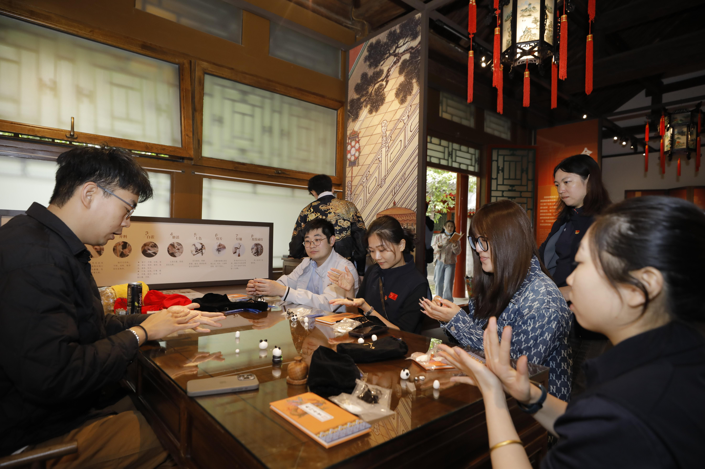

遗产价值

京杭大运河于2014年被列入《世界遗产名录》，是世界上最长的人工运河和最古老的运河之一。
- 世界文化遗产
- 人类文明见证
- 千年文化传承
探索大运河上的世界文化遗产
京杭大运河于2014年被列入《世界遗产名录》，是世界上最长的人工运河和最古老的运河之一。

运河沿线出土了大量珍贵文物，包括古代船只、码头遗址和生活用品等。

大运河的水利工程体系展现了古代中国卓越的工程技术和智慧。

大运河促进了南北方文化交流，形成了独特的运河文化带。

大运河的保护和可持续发展是当代中国文化遗产保护的重要课题。